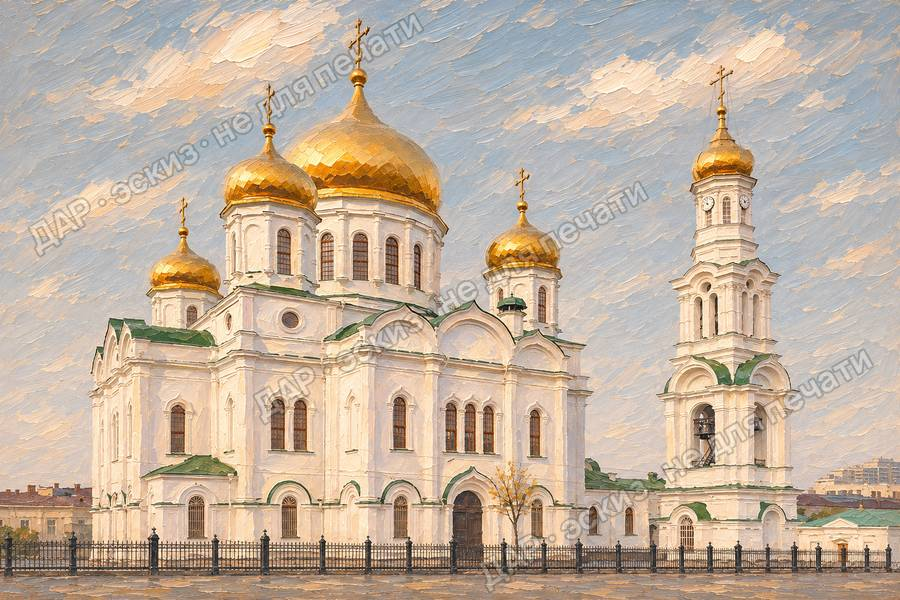
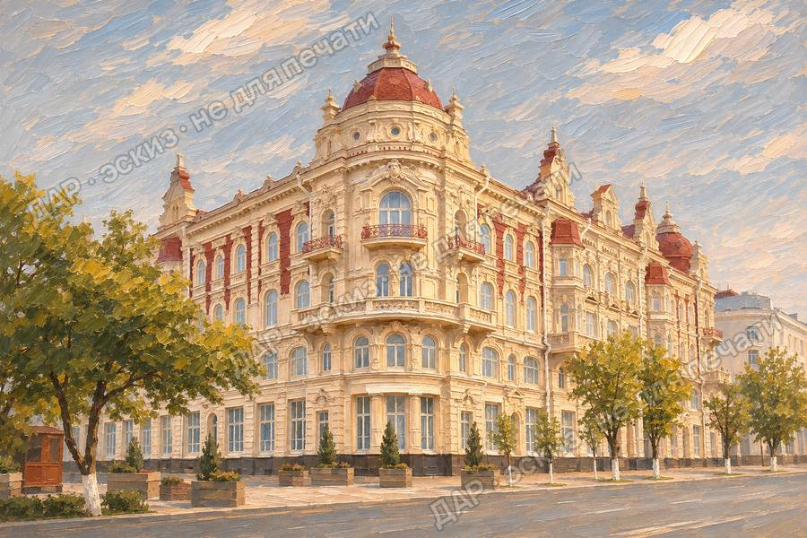
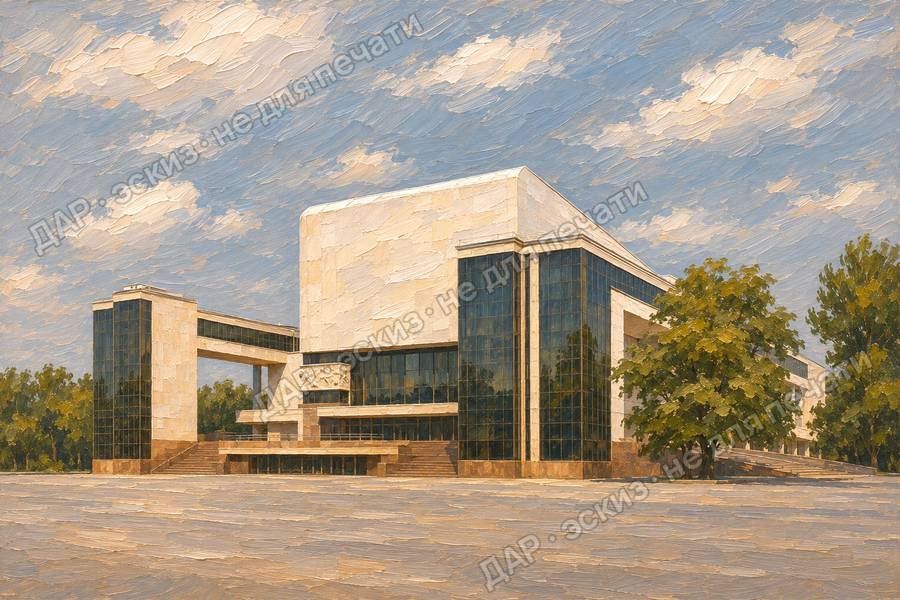
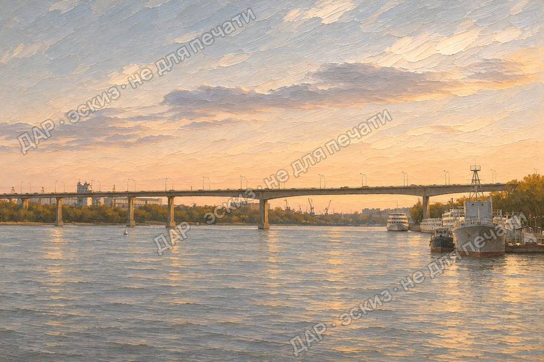

06 / Пять панно Ростова
Пять видов города
Отдельная серия по фотографиям реальных мест Ростова. Спокойные природные оттенки, узнаваемая архитектура и общая живописная фактура.

Дон и набережная
Тёплый левый берег и городской силуэт на другом берегу Дона.
Эскиз для просмотра · файлы для печати — по запросу


Кафедральный собор
Белая архитектура, зелёные кровли и тёплое золото.
Эскиз для просмотра · файлы для печати — по запросу


Городская дума
Большая Садовая: светлый фасад и мягкий городской ритм.
Эскиз для просмотра · файлы для печати — по запросу


Театр имени Горького
Узнаваемая конструктивистская архитектура в спокойной природной гамме.
Эскиз для просмотра · файлы для печати — по запросу


Дон и Ворошиловский мост
Вечерний исторический вид по фотографии 2011 года.
Эскиз для просмотра · файлы для печати — по запросу
Файлы для печати — по запросу
На странице показаны эскизы для просмотра с водяным знаком. Каждое панно — самостоятельное изображение, а не фрагмент интерьера. Формат холста и пробную печать согласуют с печатником после передачи файлов.
Источники фото-референсов
Панно написаны по фотографиям реальных мест Ростова-на-Дону из Wikimedia Commons. Производные изображения распространяются на условиях лицензии исходной фотографии.
- Дон и набережная — по фото: Липунов Г. А., «Ворошиловский мост — вид на набережную Ростова», CC0.
- Кафедральный собор — по фото: pavljenko, «Rostov on Don Cathedral 2021», CC BY-SA 4.0.
- Городская дума — по фото: pavljenko, «Rostov City Hall 2021», CC BY-SA 4.0.
- Театр имени Горького — по фото: Вадим Анохин, «Teatr Gorkogo», CC BY-SA 3.0.
- Дон и Ворошиловский мост — по фото: Vyacheslav Argenberg, «Don River in Rostov-on-Don at sunset, Russia», CC BY 4.0.